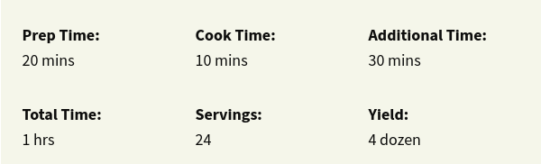
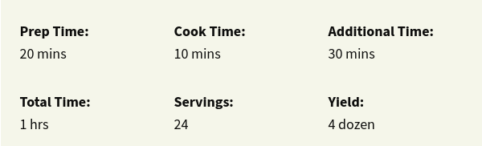

The Overall Best Chocolate Chip Cookie Recipe: Best Chocolate Chip Cookies
This recipe was hands down my favorite of the bunch. It made classic chocolate chip cookies that were a cinch to whip up and absolutely delicious. Equal amounts of brown and white sugars give them a classic chewy-yet-crisp texture while half a teaspoon of salt balances out the sweetness. Chopped walnuts giive the cookies a pop of texture that I really enjoyed, although you could easily leave them out. I loved the simplicity of this recipe and would happily make them again.
:max_bytes(150000):strip_icc():format(webp)/10813-best-chocolate-chip-cookies-mfs-step-7-148-52cdaefcd6e04707863288ded8451075.jpg) 

Ingredients
- 1 cup butter, softened
- 1 cup white sugar
- 1 cup packed brown sugar
- 2 eggs
- 2 teaspoons vanilla extract
- 1 teaspoon baking soda
- 2 teaspoons hot water
- ½ teaspoon salt
- 3 cups all-purpose flour
- 2 cups semisweet chocolate chips
- 1 cup chopped walnuts
Directions
- Preheat oven to 350 degrees F (175 degrees C).
- Cream together the butter, white sugar, and brown sugar until smooth. Beat in the eggs one at a time, then stir in the vanilla. Dissolve baking soda in hot water. Add to batter along with salt. Stir in flour, chocolate chips, and nuts. Drop by large spoonfuls onto ungreased pans.
- Bake for about 10 minutes in the preheated oven, or until edges are nicely browned.
Get Another Recipes :